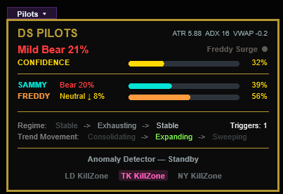
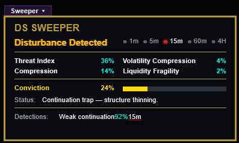

DS Radars are live read-outs that turn raw order flow — and incoming risk — into a plain-language verdict. Three instruments work the same chart from different angles — Pilots reads direction and conviction, Sweeper hunts traps and liquidity, Beacon watches the clock and the calendar so high-impact news and volatility never blindside you. Each is a self-contained cockpit, rendered without a hint of lag — so the read is always current and always trustworthy.
Direction & conviction. Two co-pilots — Sammy and Freddy — fused into one headline call with a live confidence gauge and a named regime.
The trap and liquidity hunter. Detects sweeps, stop-hunts, absorption and fake breakouts before they spring.
The early-warning radar. Tracks incoming high-impact news and the live VIX, warning amber then gold before an event hits.

Two co-pilots fly the tape. Sammy reads it conservatively, Freddy aggressively — and the cockpit fuses their votes into one headline call with a confidence score, a live buyers-vs-sellers split, and a regime state machine that tracks a move from stable to exhausting to sweeping. Every factor is ATR-normalized and the engine self-tunes its sensitivity to current volatility, so you get a full directional read and its context in one glance — never a single biased signal.

Sammy and Freddy weigh the tape independently, so you always see both the cautious and the aggressive read behind the call.
A real-time confidence bar plus each co-pilot's bias and strength shows who actually controls the move, right now.
Stable → Exhausting → Confirming, and Consolidating → Expanding → Sweeping — the move's phase, named as it changes.
London, Tokyo and New York windows light up so you know when the session actually has teeth.
Sweeper watches for the moves that fool everyone else — sweeps, stop-hunts, absorption, fake breakouts and weak continuations. It spots them the way the desks do: price pierces a recent swing, then closes back inside on heavy volume. A Threat Index and a Conviction bar quantify the danger, while a plain status line calls it for what it is. You see the trap before it springs — and you know when strength is really fatigue.

Sweep, stop-hunt, absorption, fake breakout and weak continuation are each detected and labelled with a live confidence and timeframe.
A Threat Index plus a Conviction bar tell you how real the danger is — not just that it exists.
Status lines like "continuation trap — structure thinning" expose what the candles are hiding.
Volatility compression and liquidity fragility read the pressure building under the surface, across five timeframes.
Beacon is your pre-trade early-warning cockpit — it watches the two things that wreck good setups out of nowhere: incoming high-impact news and the VIX. It ranks the three most-upcoming red-flag events by time-until, surfaces the latest breaking headline, and reads the volatility regime live, from Calm to Extreme. A two-stage warning lights the header amber as an event approaches, then full gold when it's imminent — so you size down, stand aside, or trade it on purpose.

The header runs amber HEADS UP as a high-impact event nears (default 60 min), then full gold ALERT when it's imminent (default 15 min). The panel's ring warms with it.
Reads the CBOE Volatility Index live and names the regime — Calm, Normal, Elevated, High or Extreme — with day change, previous close and a gauge.
VIX rising = Market Down (fear building); VIX easing = Market Up. One line tells you which way the tape's nerves are pointing.
The three soonest high-impact events, each with currency, time-until and an impact rating — filtered to your scope: All, USD-only or Majors.
The latest top-news headline streams in under the panel, with the full text on hover — so the market's loudest story is always one glance away.
Calendar, VIX and headlines refresh on a background timer and the render only draws cached state — so the panel never lags the chart, and a LIVE dot shows the data is fresh.
All keyless, all free — economic calendar from ForexFactory, the VIX quote from Yahoo Finance, breaking headlines from CNBC. Fetched off-thread and disk-cached, so reloads are instant and the watch never stalls.
Reads you can lean on, speed you never feel, and panels that get out of the way the second you need pure price.
Nothing shows until it's confirmed — Pilots and Sweeper cross-reference five timeframes and normalise per signal type, while Beacon cross-checks the calendar against live volatility. Reads, not lone guesses.
Fonts cached once, a single shared draw brush, alloc-free render loops, and live data fetched off the render thread. Heavy intelligence, zero drag on a live tape.
Each radar collapses to a single tab with a click. Flip them away to lock in on price, flip them back for the full read — your call, instantly.

Three radars reading the same tape — direction, traps, and the incoming risk clock — agreeing before they speak, and stepping aside the moment you need pure price. That's the DS Radar edge — intelligence that never gets in your way.